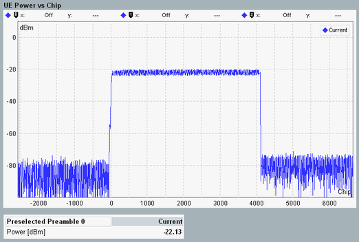

Detailed Views: UE Power and Power Steps
Each of the detailed views shows a bar graph or diagram and a table of results per preamble.

WCDMA PRACH: UE power vs. chip
- UE power
The bar graph covers up to 5 preambles and displays the mean power of each preamble, calculated as the average of the power of all samples in the preamble. The calculation excludes a 25 µs guard period at the beginning and end of the preamble. - UE power vs chip
The diagram covers all 4096 chips of the preselected preamble, labeled 0 to 4095. Also the diagram shows the power for 2560 chips before and after the last evaluated preamble. These results are labeled -2560 to -1 and 4096 to 6655. - Power steps
For each preamble, the bar graph displays the UE power difference to the previous preamble. For the first preamble, there is no power step result.